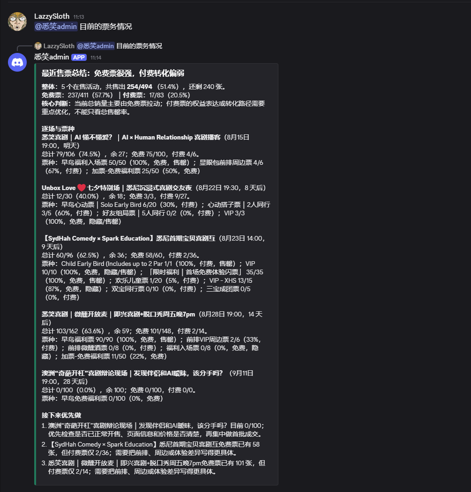
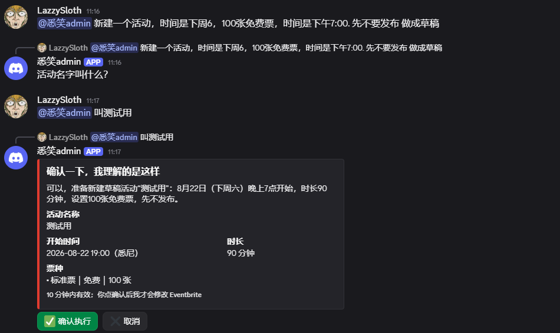
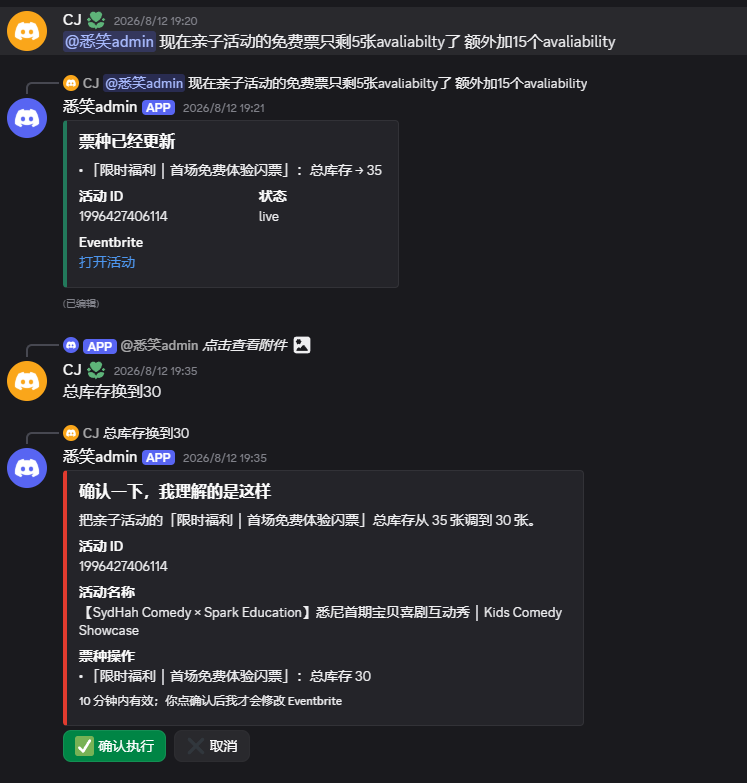

01
SydHah Comedy Eventbrite Operations Agent
A local-first operations agent that turns natural-language requests into structured, reviewable Eventbrite actions.
Built the planning and execution path across Discord, the Codex SDK, FastAPI and Eventbrite. Writes require human confirmation; allowlists, dangerous-action guards, idempotent updates and SQLite audit logs keep the system inspectable.
- Natural language to validated action plans
- Human approval gates before external writes
- Mock/live client separation and 20 passing tests
PythonFastAPIDiscord.pyCodex SDKSQLite
Repository